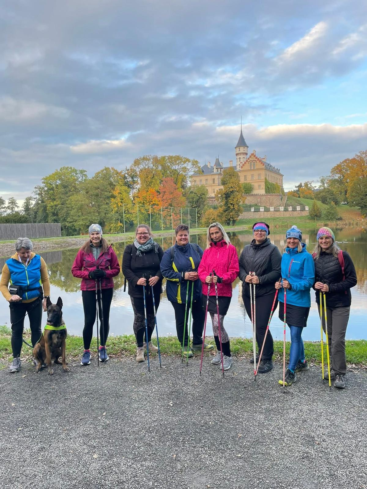
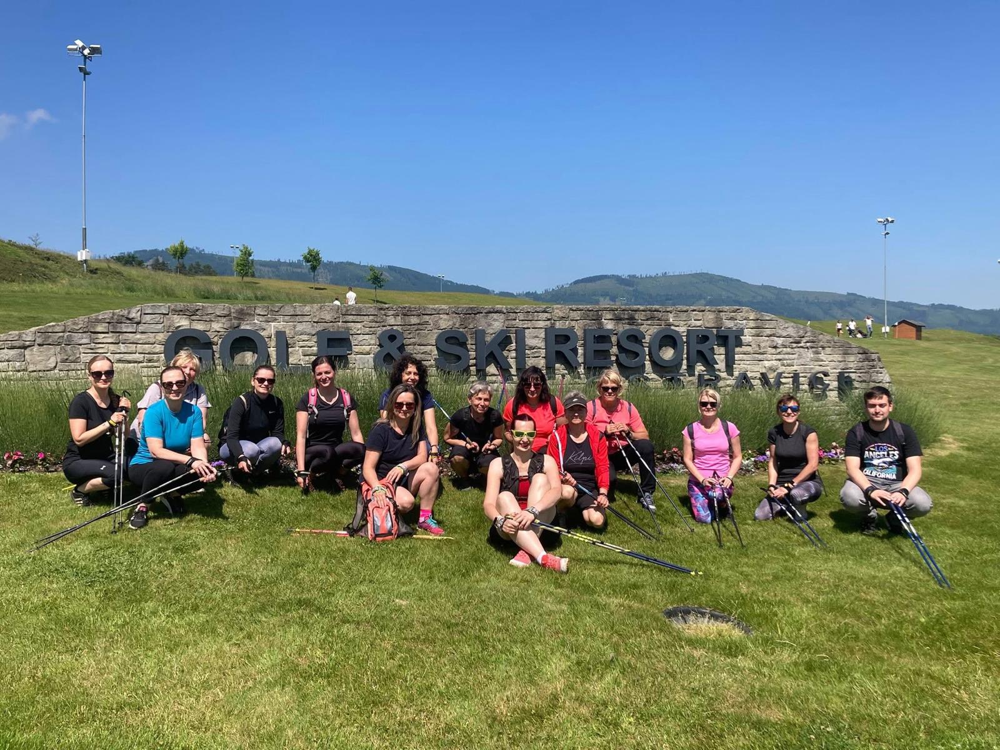
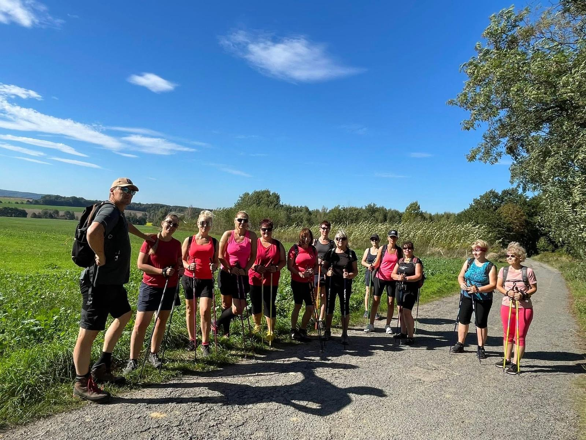
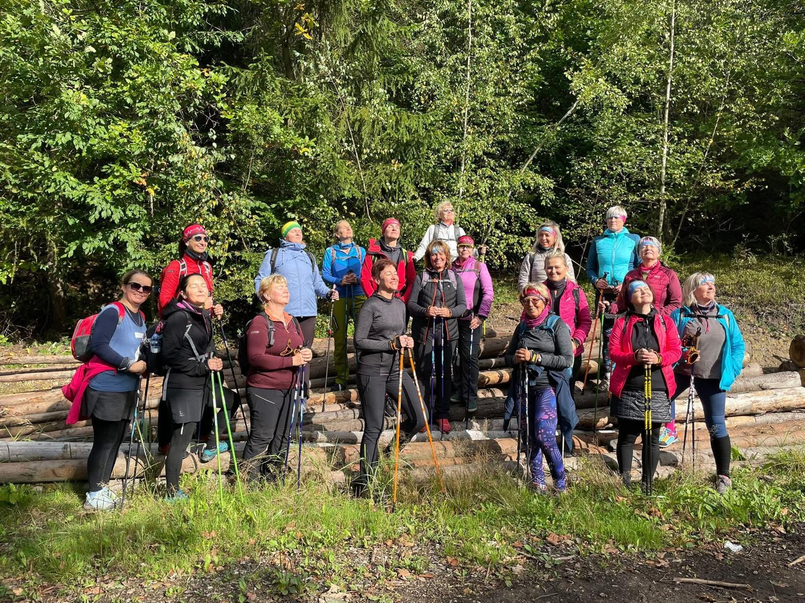

Možnosti spolupráce
- Individuální lekce
- Skupinové lekce
- Nordic Walking víkendy
- Výukové hodiny v rámci TV
- Výuka Nordic Walking na KTVS VŠB-TU OSTRAVA
- Propojení Nordic Walking a aromaterapie
Nordic Walking
Je mnohem víc než jen chůze s holemi. Je to přirozený, rytmický a velmi efektivní způsob pohybu, který zapojuje až 90 % svalů celého těla. Pochází z Finska a své kořeny má ve vrcholovém sportu, kde sloužil jako letní příprava běžců na lyžích. Dnes je celosvětově uznávanou pohybovou aktivitou vhodnou pro všechny věkové i výkonnostní skupiny. Jako certifikovaná instruktorka Nordic Walkingu s více než 9 letou praxí ti pomohu osvojit si správnou techniku, zlepšit kondici, držení těla i celkový pocit ze svého těla – bezpečně, efektivně a s radostí z pohybu.
Pohyb přesně pro tebe!
Individuální lekce jsou ideální volbou, pokud chceš maximální pozornost a přístup šitý na míru.
Společně se zaměříme na:
Lekce probíhá v klidném tempu a s respektem k tvým možnostem. Vhodné pro začátečníky i pokročilé.
Pohyb, který spojuje!
Skupinové lekce nabízejí motivující atmosféru, radost ze společného pohybu a sdílenou energii. Lekce jsou vedeny tak, aby si každý účastník našel své tempo a cítil se příjemně. Tempo vždy uzpůsobíme všem, najdeme společné řešení. Sociální funkce Nordic Walking je silná, motivující a energizující. Je to nejoblíbenější forma této sportovní aktivity vůbec.
Skupinová výuka je vhodná pro:
Aktivní odpočinek v přírodě a společnosti stejně naladěných lidí!
Víkendové akce s Nordic Walkingem jsou ideální příležitostí, jak vypnout hlavu, rozhýbat tělo a načerpat novou energii. Jedná se nejčastěji o prodloužený víkend od pátku odpoledne do neděle.
Co můžeš očekávat:
Jezdíme pravidelně na jaře a na podzim na různá místa. V penzionech či hotelích máme zázemí v podobě příjemného ubytování ve 2-5 lůžkových pokojích. Jednolůžkový pokoj není problém za příplatek zajistit. Samozřejmostí je sociální zařízení na každém pokoji a strava ve formě polopenze.
Aby bylo zajištěno vše potřebné pro tvůj stoprocentní víkendový relax – bez starostí o stravu a další povinnosti, které máme v týdnu a doma.
Vhodné pro jednotlivce, menší skupiny či manželské páry. Vhodné pro ženy i muže.
Aktivní odpočinek na sluncem prosluněném ostrově levandule Hvar (Chorvatsko) a ve společnosti stejně naladěných lidí!
Týdenní pobyt s Nordic Walking v Chorvatsku se osvědčil poprvé na jaře 2026 a bude se tím pádem opakovat. Záměrně je pobyt uskutečněn v období duben-květen, kdy zde ještě lze bezpečně Nordic Walking provozovat přes den, bez hrozby velmi vysokých teplot a nekomfortu pro sportovní aktivity.
Co můžeš očekávat:
Chceš s námi zažít toto dobrodružství a pohodu zároveň? Bude mi ctí!
Zdravý pohyb jako součást výuky!
Nordic walking je skvělým doplněním tělesné výchovy.
Výukové hodiny jsou zaměřeny na:
Lekce jsou přizpůsobeny věku i fyzickým možnostem žáků a studentů a jsou vhodné pro ZŠ i SŠ.
Nordic walking je od zimního semestru roku 2025 součástí výuky na Katedře tělesné výchovy a sportu VŠB-TU Ostrava, kde se studenti seznamují s touto moderní a zdraví prospěšnou pohybovou aktivitou v odborném a praktickém kontextu. Tuto činnost vykonávám jako externistka ITVS a coby studentka Ekonomické fakulty VŠB- TU Ostrava je mým splněným snem.
Nordic Walking je dynamická chůze se speciálními holemi, která aktivně zapojuje horní i dolní část těla. Posiluje svaly, zlepšuje kondici, šetří klouby a je vhodný pro všechny bez ohledu na věk či výkonnost.
Pochází z Finska a bývá často spojován s rekreačním pohybem, ale ve skutečnosti má své kořeny ve vrcholovém sportu. Konkrétně byl využíván jako letní tréninková metoda běžců na lyžích. Dnes se jedná o celosvětově uznávanou pohybovou aktivitu vhodnou pro všechny věkové i výkonnostní skupiny.
Nordic Walking je přirozený, rytmický a efektivní způsob pohybu, při kterém se do chůze aktivně zapojují horní končetiny pomocí speciálních NW holí. Díky tomu Nordic Walking posiluje celé tělo, zlepšuje kondici, držení těla, odbourává stres a podporuje zdraví bez nadměrného zatížení kloubů.
Hlavní výhody Nordic Walkingu:
Co Nordic Walking není:



